
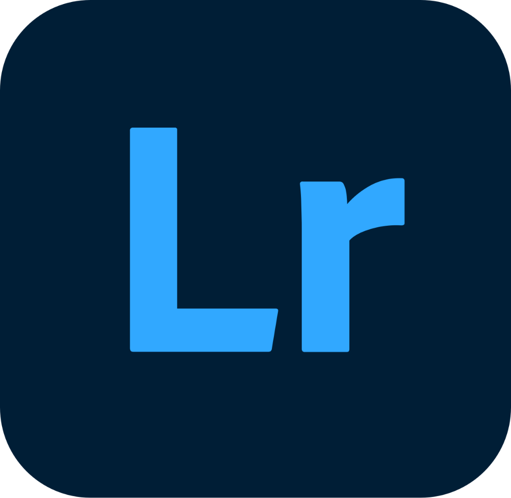
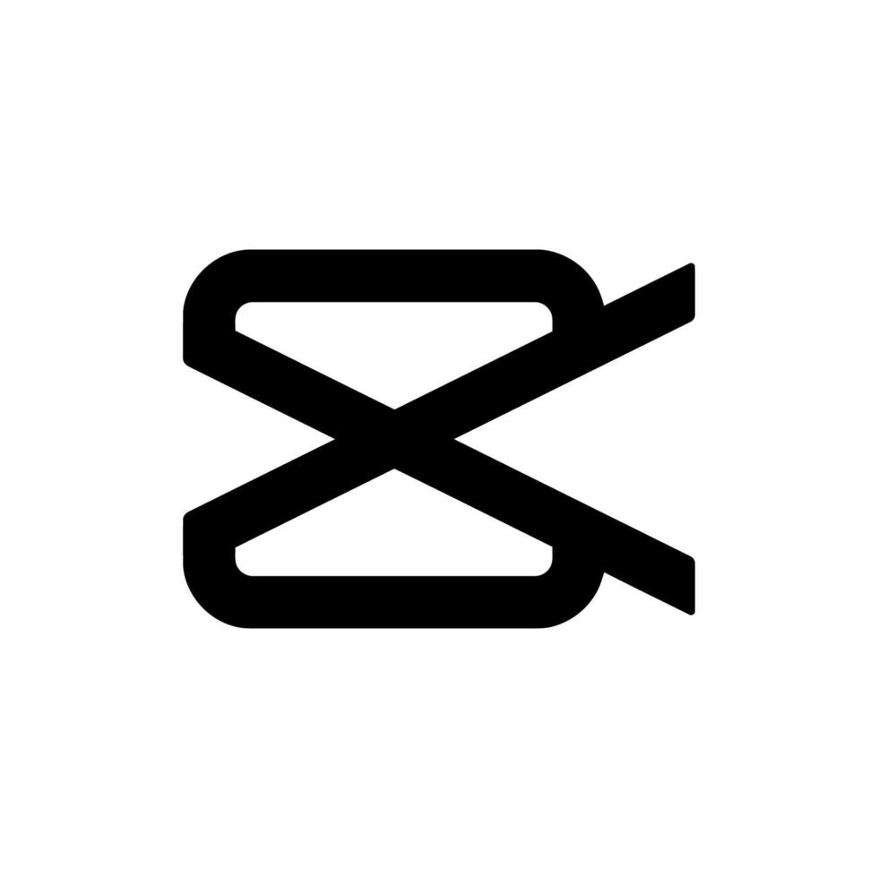

Costruzione dell'identità di brand, produzione multimediale sul campo e pubblicazione dei contenuti sulla pagina social.
Sono stato contattato dall'associazione per aiutarli nella transizione dell'identità della pagina da festival musicale a associazione culturale e per restare coinvolto nel processo di comunicazione sponsorizzando gli eventi successivi.
Mesi
Eventi
Visualizzazioni di
non follower
Storie pubblicate
ad aprile
Meta Ads

Lightroom

CapCut
"Da quando Giordano è entrato in ReWild si è dimostrato essere disponibile a prendersi in carico la responsabilità di pubblicare i contenuti sulla nostra pagina Instagram, oltre che a prestare servizio come volontario durante gli eventi della stagione."
Studio del territorio
Target Audience
Competitor Locali
Posizionamento
Identità Visiva
Tone of Voice
Calendario Editoriale
Organizzazione Eventi
Budgeting
Creazione Contenuti
Gestione Campagne
Logistica
Studio dei risultati
Feedback Community
Ottimizzazione sponsorizzate